-
1Navigate to https://www.office.com
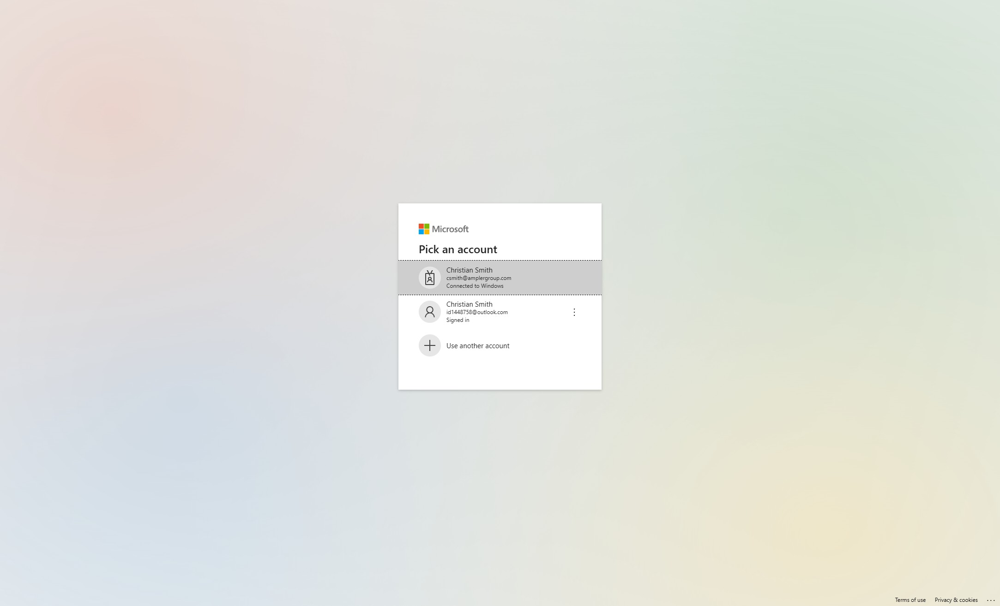
-
2Login.
-
3Click menu icon.
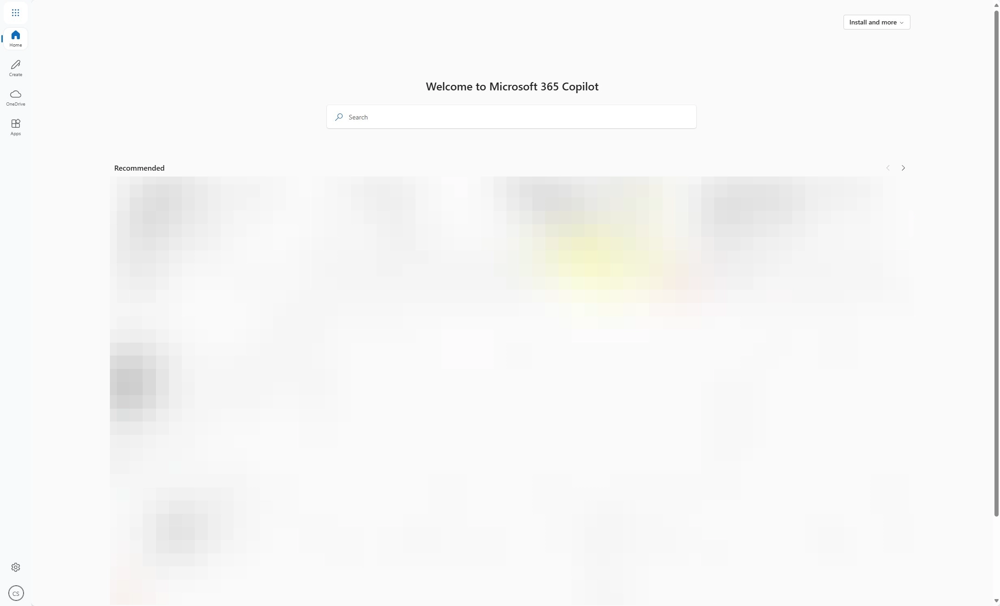
-
4Click Teams icon.
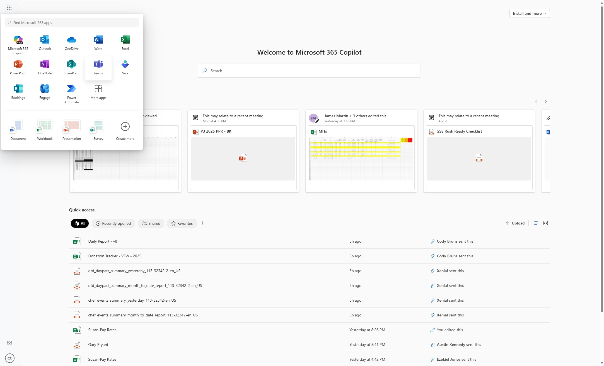
-
5Activity- Provides overview of all activities within Teams related to you \ Chat- Where you will find all chats with Ampler users and chats to meetings you've attended \ Teams- Team sites that all you to collaborate with other users on projects \ Calendar- Outlook calendar will show here \ Calls- History of all your Teams calls \ OneDrive- Shows your personal OneDrive inside Teams
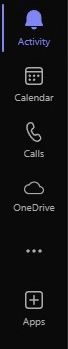
Teams Chat
-
6Preview of Chat page.
-
7The search bar at the top lets you search for users to start chatting with them.
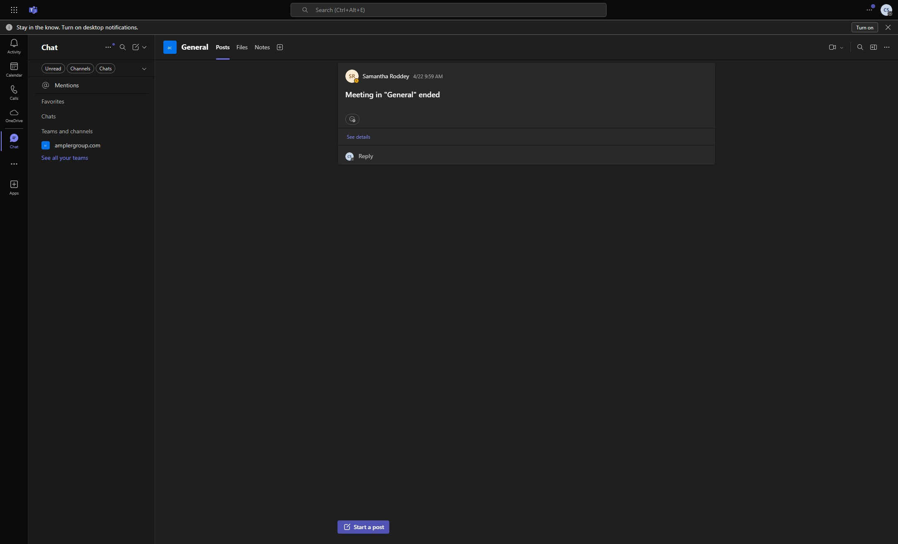
-
8You can now chat with user and share files.
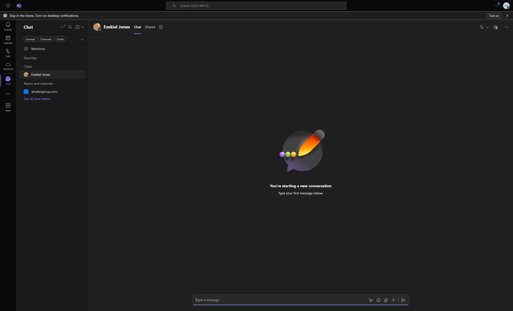
Teams
-
9Here you can see all the teams you have access to and have created. Teams is a way to collaborate with other members on a project. On the left plane you see all the teams you are member of.
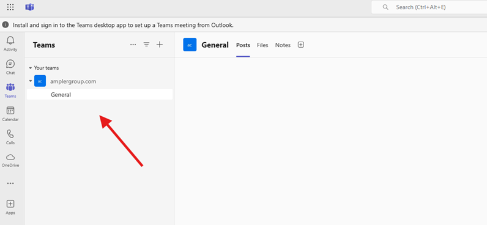
-
10You can create a team by click on the "+" button.
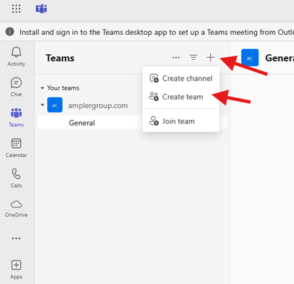
-
11Fill in all the details for the team you want to create.\ Team Type: Private (Makes sure no one can find the teams channel, only owners of the team can invite others into the channel)\ Team Type: Public (Anyone can search for the Teams channel and join)
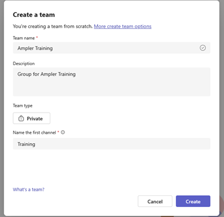
-
12To manage a team, click on the 3 dots against the team and go to "Manage team"
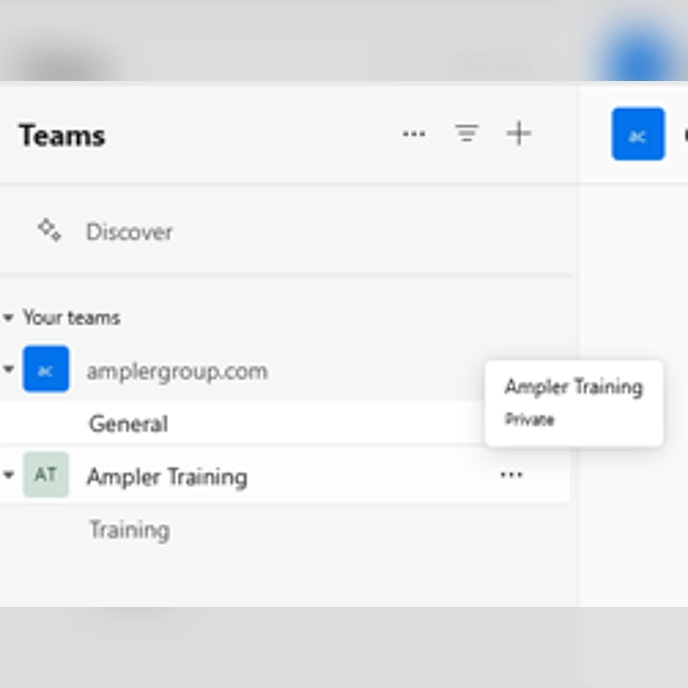
-
13You have various Teams management options here Channels: add or edit Channels within a team Members: Add or remove members. Add other members as owners Pending Requests: Check for Requests to join the team
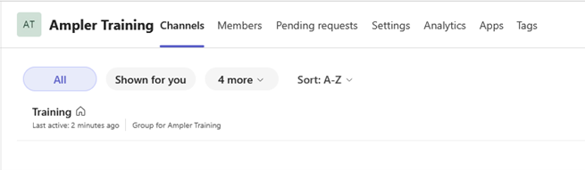
Adding Members to the Team
-
14Click on "Members" and "+ Add member"
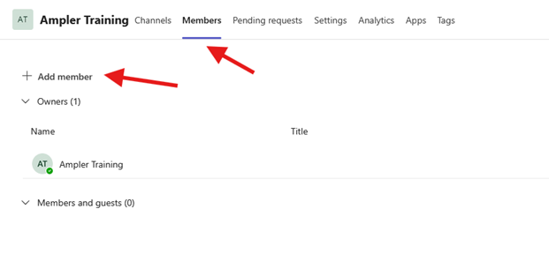
-
15Search for the member and click on the user
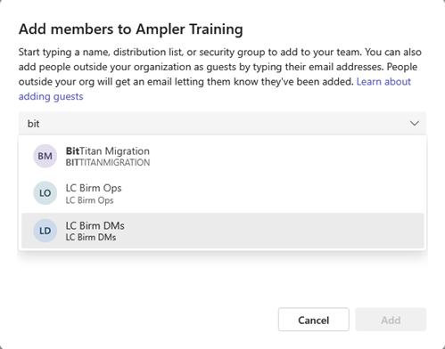
-
16Change the member type as needed and click "Add"
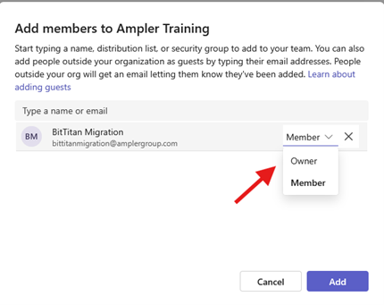
Teams Calendar
-
17To setup new meeting: Click "New meeting"
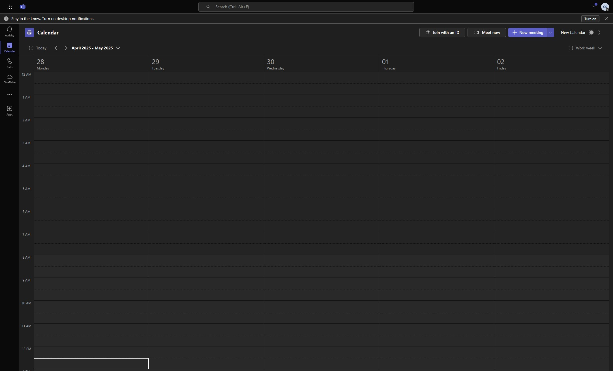
-
18Fill out all the details for the invite.
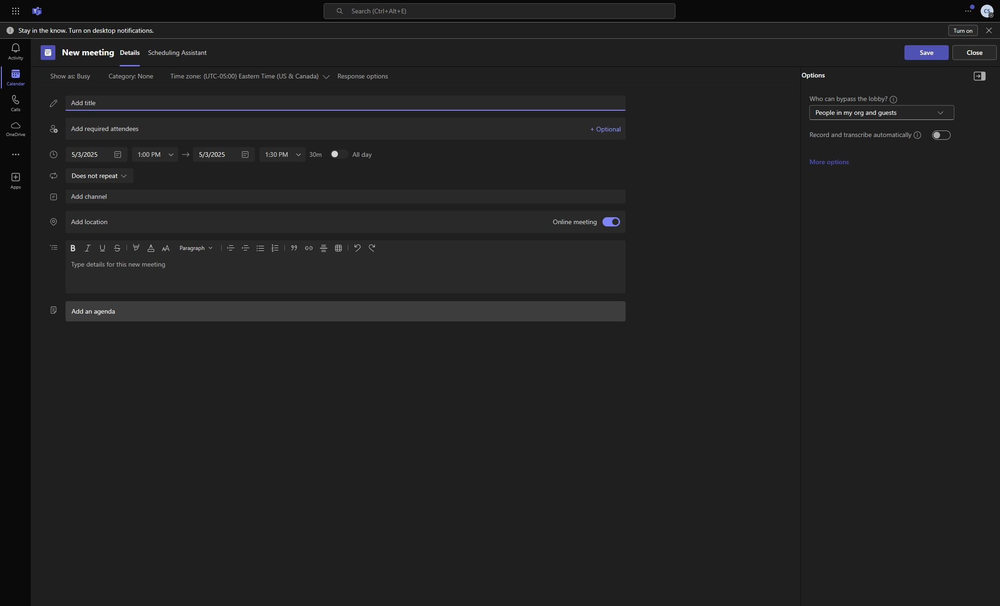
-
19Click "Save"
-
20You Teams meeting invite will automatically generate a Teams meeting link, which people can join.
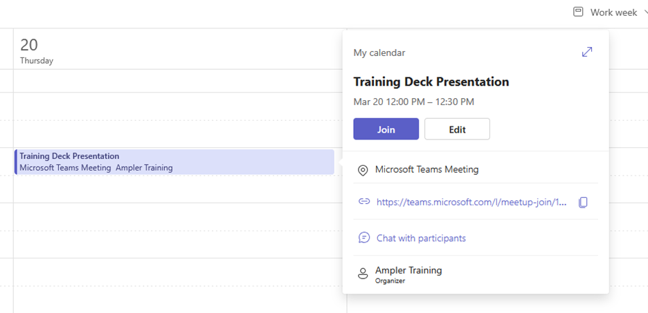